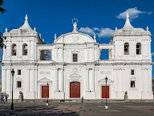

Época Prehispánica
10,000 a.C. - 1523Primeros pobladores, grandes culturas y legado ancestral.
Conocer másPueblos, culturas, luchas y tradiciones que han dado forma a nuestra identidad.
Un recorrido por los momentos que construyeron nuestra nación.
Primeros pobladores, grandes culturas y legado ancestral.
Conocer más
Lucha por la tierra, la libertad y la identidad.
Conocer más
Transformaciones sociales, culturales y económicas.
Conocer más.jpg)
Nacimiento de la nación y búsqueda de soberanía.
Conocer más
Defensa de nuestra soberanía e identidad.
Conocer más
Cambios políticos, sociales y culturales que marcaron al país.
Conocer más
Un país que avanza con su gente, su cultura y su patrimonio.
Conocer másConocé la riqueza histórica, cultural y natural de cada departamento y región autónoma de Nicaragua.
Un recorrido continuo por la historia, cultura y naturaleza de Nicaragua.

Cuna de la independencia, ciudad de arte, historia y tradiciones.
Explorar LeónCulturas que mantienen vivo el espíritu de Nicaragua.
Raíces del Pacífico, tradición cerámica y legado cultural.
Pueblo del gran lago y la fertilidad de la tierra.

Guardianes de las montañas del norte.
Cultura del Caribe, mar, ríos y biodiversidad.
Sabiduría ancestral de la Reserva de Biósfera.
Líderes, pensadores, artistas y hombres y mujeres que dejaron un legado.
Líder chorotega, símbolo de resistencia y dignidad.
Héroe de la Guerra Nacional y defensor de la soberanía.
Líder militar y figura clave en la defensa nacional.
Poeta universal, orgullo de Nicaragua y padre del modernismo.

Defensa de la soberanía y la autodeterminación.
Nuestra cultura sigue presente en cada expresión.
Patrimonio de la Humanidad (UNESCO)

Testimonios milenarios de nuestra historia.
Ciudad colonial (UNESCO)

Historia viva a orillas del Gran Lago.
Arte ancestral en piedra.

Expresiones que nos identifican.
Descubrí cómo nuestros sitios históricos se mantienen vivos.

Relatos, música y personajes en voz de Baqueano Digital.
Catálogo oficial validado con INTUR e Instituto de Cultura: baluartes, fortalezas coloniales, templos patrimoniales y museos de nuestra identidad.
Baluarte militar español de 1675. Custodió la ruta interoceánica de piratas y bucaneros. Cuna de la heroína nacional Rafaela Herrera.
Río San Juan · Abierto martes a domingoPatrimonio de la Humanidad UNESCO fundado en 1524 por Francisco Hernández de Córdoba. Sepultada por erupciones del volcán Momotombo en 1610.
La Paz Centro · Museo de sitio y senderosIcono arquitectónico de hierro y cantera neoclásica inaugurado en 1938. Resistió con su fachada intacta el terremoto del 23 de diciembre de 1972.
Managua Histórica · Circuito XolotlánMonumento de la dignidad nacional. Escenario de la batalla del 14 de septiembre de 1856, donde Andrés Castro y los patriotas derrotaron a los filibusteros.
Km 39 Carretera Panamericana NorteBajo el altar de la Insigne Basílica Catedral reposan los restos del Príncipe de las Letras Castellanas, custodiados por el esculpido León Doliente de mármol.
Plaza Mayor de León · Acceso a bóvedasFuerte colonial español construido en el siglo XVIII para abastecimiento y depósito militar ante ataques de piratas ingleses que asolaban el Gran Lago.
Final de Calle Real Xalteva, Granada